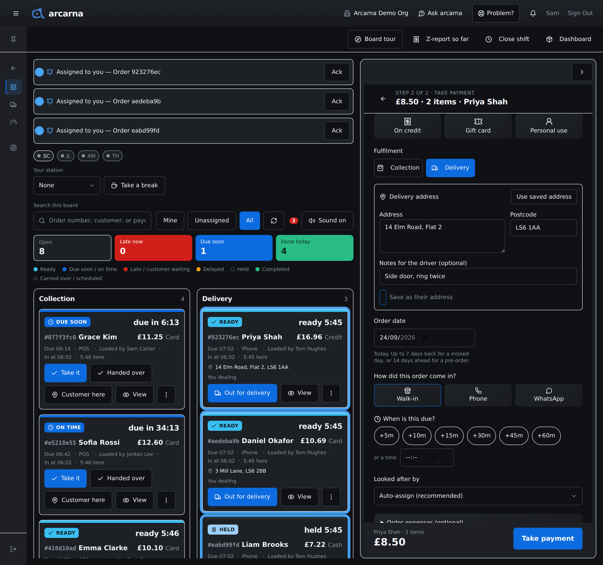
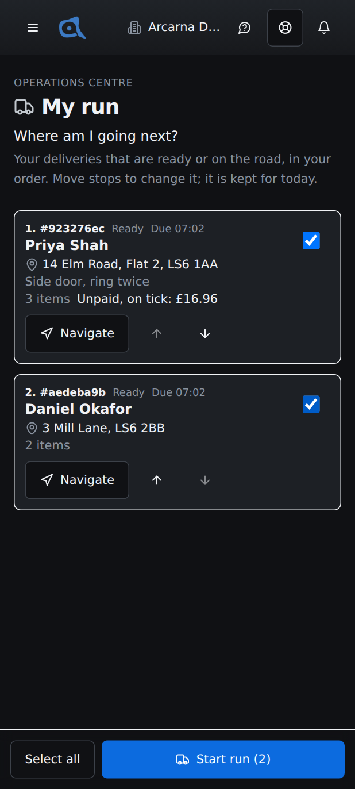
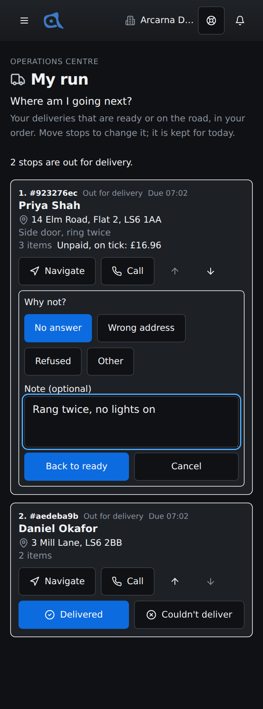
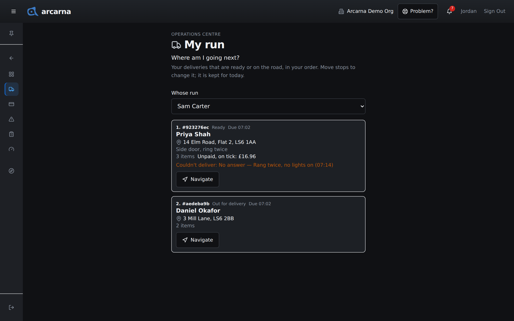

Staff training manual
Staff training manual
How a delivery is taken at the till, how it reaches the right driver, and how the driver works it from My run on a phone: putting the stops in order, starting the run, and saying what happened at each door, even with no signal.
Who this is for
Drivers are staff with deliveries
There is no separate driver role in arcarna. Whoever a delivery is assigned to is its driver, and they work it from My run in the Operations Centre. A cashier account is all a driver needs. Everyone on the staff has a My run page, and each person only ever sees their own deliveries on it. CASHIER DRIVER MANAGER
| Who | What they do with deliveries |
|---|---|
| CASHIER | Takes the delivery at the till with an address, and chooses who looks after it. |
| DRIVER | Opens My run on their phone, puts the stops in order, starts the run, and marks each stop Delivered or Couldn't deliver. |
| MANAGER | Can look at any driver's run (read-only), hand deliveries to another person on the board, and hears about every failed delivery through a Signal. |
Deliveries · at the till
A delivery needs an address
A delivery carries its own address on the order. The driver reads it from the order, not from the customer's record, so an order can go to a different door from the customer's usual one. arcarna will not take payment for a delivery until the address and postcode are filled in.
- Build the order as usual (Section 3), then select Continue to payment.
- Under Fulfilment, choose Delivery. It starts on Collection every time, because most till sales are collected.
- A Delivery address box opens. Fill in Address and Postcode.
- If there is anything the driver should know, add it under Notes for the driver (optional), for example "Side door, ring twice".
- If a customer is attached to the order, you can select Use saved address to fill in the address they have on file. You can still change it for this order. If they have none, you see No saved address for this customer.
- To keep this address on the customer's record for next time, tick Save as their address. It always starts unticked.
- Check Looked after by (see below), then take payment as usual.
If you try to pay without an address or postcode, arcarna stops and shows Add the delivery address: A delivery needs the address and postcode before payment. Fill them in and pay again. Choosing Delivery also suggests a due time 45 minutes from now, unless you have picked one yourself.

Who the delivery goes to
Looked after by, on the same payment step, decides whose run the delivery lands on.
| Choice | What happens |
|---|---|
| Auto-assign (recommended) | arcarna picks for you: you, if you work that station, otherwise the least busy person who is on it. If nobody fits, or your shop has switched automatic owners off, the order waits on the board for someone to select Take it. |
| A person's name | The delivery is theirs straight away. Pick the driver here when you already know who is taking it. (you) marks your own name, and · away marks someone who is not on right now. |
If nobody is looking after a delivery, the person who taps Ready or Out for delivery on the board becomes its driver.
Deliveries · on the board
Deliveries on the Operations board
A delivery sits on the Operations board like any other order (Section 4), with a few differences:
| On the board | What it means |
|---|---|
| The address line | Every member of staff sees the address and postcode on the card while the delivery is live. Once it is completed, the card leaves the board. |
| Out for delivery | The main button once a delivery is ready. It marks the order as on the road. A driver usually does this from My run instead, with Start run. |
| Delivered | On a delivery, the finishing button reads Delivered rather than Handed over. |
| Pass to… | Hands the order to someone else, so it moves onto their run. The person looking after it can pass it on, and so can managers. |
| An amber note | A driver could not deliver it last time. The note says why and when, for example Couldn't deliver: No answer (14:32). |
Putting an address right
A mistyped house number sends the driver to the wrong door. Open the order's details on the board and select Change address (or Add address if there is none). Correct the Address, Postcode or Notes, then Save address. The change is logged, and the driver's My run shows it the next time it refreshes, within about half a minute.
The customer's phone number is not on the board. The driver can call the customer from My run once the delivery is out; see Calling the customer below.
My run · on your phone
My run
My run is the driver's page, in the Operations Centre. It answers one question: Where am I going next? It lists your own deliveries that are ready or already on the road, in the order you choose, with everything you need at each stop. It was built for a phone: one column, big buttons, nothing that pops up over the page.
- On your phone, open arcarna (from your home screen if you added it, Section 1).
- Open the menu, choose Operations Centre, then My run.
- The page refreshes itself every 30 seconds, so a delivery someone has just handed to you appears without you doing anything.
The first time you open it, a short tour points out the stops, Navigate, Start run, Delivered and Couldn't deliver. If you have no deliveries, the page reads No deliveries ready or on the road for you.

Reading a stop
| Part | What it tells you |
|---|---|
| 1. #2f8a91c0 | The stop's place in your run, and the order's code (the first eight characters of the order, the same as on the board and the label). |
| Ready or Out for delivery | Waiting to go, or on the road with you now. |
| Due | When the customer was told to expect it. |
| Name and address | Who it is for and where it goes, with the driver's notes beneath. No address on the order means someone needs to add one on the board before you set off. |
| Items | How many items are on the order, as a quick check before you leave. |
| Unpaid, on tick: £… | Part or all of this order was sold on tick (credit), so the customer still owes that amount. Your manager will tell you whether to collect it. |
| An amber line | The last attempt failed, and why, for example Couldn't deliver: No answer (13:10). |
Putting your stops in order
Stops start in due-time order. To change it, use the up and down arrows under a stop. On a tablet or computer you can also drag a stop by its handle. Your order is saved for today, so it is still there if you close the page and come back. A new delivery that arrives later joins the list by its due time, after the stops you have placed.
Starting the run
- Tick the box on the right of each stop you are taking now, or select Select all at the bottom.
- Select Start run. It shows how many stops you ticked, for example Start run (3).
- You see 3 stops are out for delivery. Those stops now read Out for delivery, and the board shows them on the road.
If one stop could not be started, the message says which one and why. The others still go.
Getting there
Navigate opens directions to the stop's address: Apple Maps on an iPhone or iPad, Google Maps on anything else. It only appears when the order has an address.
Calling the customer
Once a stop is out for delivery, a Call button appears on it, as long as there is a customer on the order. Select Call to show the number, then tap the number to ring it.
- Only the driver the delivery is assigned to gets the number, and only while it is out for delivery.
- Every time the number is shown, arcarna records who asked and when.
- The number is never kept on your phone. It disappears when you leave the page.
My run · at the door
Delivered, or couldn't deliver
Each stop that is out for delivery has two large buttons. Tap one at the door, before you drive off.
Delivered
Select Delivered. You see #2f8a91c0 delivered. The order is completed and leaves your run and the board.
Couldn't deliver
- Select Couldn't deliver. The stop asks Why not?
- Pick a reason: No answer, Wrong address, Refused or Other.
- Add a line under Note (optional) if it helps the next attempt. For Other the box reads What happened (needed): a bare "other" tells the next driver nothing.
- Select Back to ready. Or Cancel if you tapped it by mistake.
You see #2f8a91c0 is back to ready. The managers have been told. Three things happen together:
- The delivery goes back to Ready and stays on your run for the next attempt.
- The reason, and the time, show in amber on the stop and on the board card.
- The managers get a Signal saying who could not deliver which order, and why.
To try again later, tick the stop and Start run as before.

My run · no signal
When the phone loses signal
Drivers lose signal all the time, so My run keeps working without it. An amber box at the top says so: You are offline., or Showing your run as last loaded at 14:05. if you opened the page with no connection.
| Button | With no signal |
|---|---|
| Delivered and Couldn't deliver | Work as normal. The tap is kept on the phone, with the time you made it, and you see Saved on this phone: #2f8a91c0 will be sent when you are back online. The stop already shows the result. |
| Navigate | Opens your maps app as usual. Whether it can plan a route depends on the maps app. |
| Moving stops | Works on this phone. You see a note that the new order stays on this phone until you are back online and move a stop again. |
| Start run and Call | Need a connection. They tell you so and do nothing until you are back online. |
Taps waiting to send
While taps are waiting, a box reads, for example, 2 taps waiting to send · #2f8a91c0 · #7b01d4e2. When the signal returns, open My run and they go by themselves, or select Send now. arcarna keeps trying in the background while the page is open.
- A stop whose Couldn't deliver is still waiting shows Waiting to send instead of a tick box. You cannot start it again until that tap has gone.
- If the server turns a tap down, for example because a manager cancelled the order meanwhile, it shows in red as #2f8a91c0 was not accepted: with the reason. Tell your manager, then select Dismiss.
For managers · watching the runs
Viewing a driver's run MANAGER
Managers see a Whose run box at the top of My run. It lists you, marked (me), and everyone who has a delivery ready or on the road.
- Open Operations Centre › My run.
- Under Whose run, choose the driver.
- You see their stops, in their order, with each stop's state, due time, address, tick amount and any Couldn't deliver note. If they have none, it reads, for example, Priya Shah has no deliveries ready or on the road.
Someone else's run is read-only. You can use Navigate, but you cannot reorder their stops, start their run or mark a stop. Nothing about their run is saved on your device. To give a delivery to another driver, use Pass to… on its card on the Operations board.

When a delivery fails
Every Couldn't deliver sends managers a Signal titled, for example, Couldn't deliver #2f8a91c0, saying who, where (the postcode), the reason and the note, and that It is back to ready. Decide the next step: send it out again later, pass it to another driver, change the address on the board, or contact the customer (Section 7).
Managers also keep seeing a delivery's address after it is completed, for example to deal with a complaint. Cashiers only see it while the delivery is live.